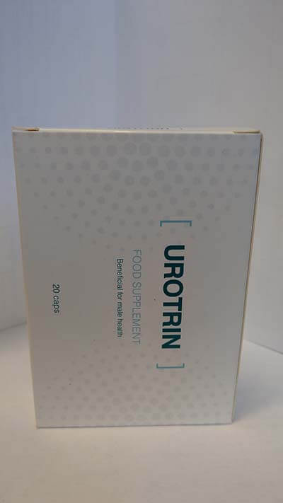

Descoperirea unică a oamenilor de știință români în scăparea de impotență, încearcă să ascundă în propria țară. Urologul a spus cum mafia farmaciei luptă cu remediile eficiente.
Adevărul șocant!
Nu este necesar să spunem că probleme cu potenţa apar la toţi bărbaţii mai devreme sau mai târziu. De-a lungul istoriei omenirii, oamenii de știință și medicii caută medicamente împotriva acestei boli. Și, literal, 3 ani în urmă, liderii urologi români de la Institutul de Cercetări de Urologie și Radiologie Intervențională au făcut progres în acest domeniu, creând un complex biogenic unic numit . El este capabil să întoarcă potența chiar și la 60-70 de ani, nu mai vorbim de o vârstă mai înaintată.
Cu toate acestea, invenția nu numai că nu a fost necesară nimănui în România, ci și interferează cu mafia farmaciei românești. Despre ceea ce se întâmplă și de ce "banii decid totul", a fost de acord să spună directorului adjunct al activității științifice, doctor în științe medicale, profesorul Brauş Mihai.
- Domnul Mihai, este adevărat că produsului creat de institutul dvs. a fost declarat un adevărat război? Cum a împiedicat mafia farmaciei?
- E adevărat. Până când nu s-a ajuns la amenințări personale. Și sper că nu va ajunge, și în situația încă intervine Ministerul Sănătății, dar situația este tensionată la limită. Nu numai că nu permit remediul în rețelele farmaciei românești, iar noi ne-am adresat la toate. Dar şi interzic publicitatea lui în mass-media. Am vrut să plasăm anunțuri în reviste - am fost refuzați peste tot, indicând motivele inventate. Se referă la faptul că publicitatea mijloacelor medicale este interzisă. Cu toate acestea, aceeași Viagra sau altele preparate similare sunt anunțate peste tot.
Și în edițiile de profil (medicale), o astfel de publicitate este permisă, dar acolo am primit refuzul.
După ce am fost refuzați în mai multe ediții, am întrebat direct ce se întâmplă. Ni sa spus că au primit instrucțiuni pentru a ne împiedica. Nu voi numi nume sau publicații specifice pentru a nu provoca următoarea rundă a scandalului. Pentru a fi sincer, am regretat chiar că am început să lucrăm în acest domeniu.
Vedeți, farmacologia română de astăzi este o afacere de miliarde de dolari, care aduce venituri la fel de colosale ca și comerțul cu arme, droguri sau petrol. Și mijloacele pentru potență constituie partea leului din aceste venituri. Este clar că nimeni nu vrea să-și piardă această afacere.
- Ați apelat la structurile de stat? De exemplu, în serviciul antitrust?
- Sigur. Și nu doar în ea. Ne-am adresat în toate instanțele de rang înalt, dar nu am primit nici un răspuns, nici acțiuni de soluționare a situației. Ultima instanță a fost Ministerul Sănătății. Special pentru aceasta, am colectat semnături de peste 100 de oameni de știință cunoscuți în România. Toți au confirmat eficacitatea ridicată a produsului și au sugerat că un astfel de mijloc este necesar. Ba mai mult – îl așteaptă oamenii. Ministerul Sănătății a răspuns peste o lună după solicitare că înțelege situația, dar au trecut deja șase luni și din nou nu se întâmplă nimic.
Suntem suspendați și nu știm ce să facem în continuare. Va fi păcat dacă această dezvoltare rămâne inutilă pentru oricine, pentru că într-adevăr poate ajuta la mulți bărbați. Și în SUA și în Europa există deja astfel de mijloace brevetate și ajută cu succes. De aceea, Viagra și alte medicamente pe baza unei substanțe cancerigene periculoase – sildenafil în țările dezvoltate, nimeni nu cumpără.
Dar în România nu reuşesc să-l aducă la farmacii. Bărbații se ucid literalmente luând aceste medicamente. Dar ei nu au o cale de ieșire - nu există alte mijloace, iar suplimentele alimentare, care sunt acum vândute pe scară largă pe internet, pur și simplu nu ajută.
Apropo, despre eficacitatea mijlocului nostru pentru scăparea de disfuncție erectilă. Am făcut cercetări clinice. În total, au participat aproximativ 1000 de bărbați peste 50 de ani care suferă de slăbirea potenței. Toți au luat . Vreau să vă arăt rezultatele cercetărilor - sunt pur și simplu uimitoare.
Rezultatele:
- Potenţa sa recuperat (a apărut o oportunitate de a face sex cel puțin o dată pe săptămână, fără excitatori) - 96% dintre cei studiați
- Libidoul și dorința sexuală au crescut - 98% dintre cei studiaţi
- Sensibilitatea penisului a crescut - 94% dintre cei studiaţi
- Simptomele prostatitei au trecut (inclusiv urinarea sa normalizat) - 87% dintre cei studiaţi
- Îmbunătățirea bunăstării, creșterea energiei - 98% dintre cei studiaţi
Adică, după cum puteți vedea, a ajută nu numai la întărirea excitației imediat după administrare (ca același Viagra, numai în siguranță), ci și la restabilirea completă a potenței cu admitere prelungită. Produsul este o adevărată salvare pentru aproape toți bărbații cu vârsta peste 50 de ani. CU AJUTORUL , PUTEȚI AVEA ACEEAȘI POTENȚĂ CA ȘI ÎN TINEREȚE.
- Viagra nu are același efect?
- Bineînțeles că nu. Viagra este o otravă reală. Tot ceea ce face sildenafilul (componenta principală a Viagra și a altor agenți stimulatori) este dilatarea anormală a vaselor din pelvisul mic. Ca rezultat, există o potență temporară. Odată ce acțiunea Viagrei trece, potența dispare. Cu toate acestea, Viagra pe care o luați pe cale orală, nu poate dilata vasele de sânge numai în pelvisul mic – are același efect asupra altor vase, ducând la diferite patologii. De aceea, Viagra are atât de multe efecte secundare și de aceea, atunci când este luată, bărbații mor adesea de atac de cord sau de accident vascular cerebral.
Opinia mea ca medic cu o mulțime de experiență – Viagra ar trebui să fie interzisă la nivel de stat. Dar, desigur, nimeni nu va merge la asta - pentru că veniturile pe care le aduce sunt colosale.
- Aţi spus că produsul pe care l-aţi creat nu a fost ratat în rețeaua de farmacii. Asta înseamnă că nu este disponibil pentru comandă?
- Acum se decide ce să facă cu el în continuare. Dar este posibil și o astfel de evoluție că vom pune dezvoltarea pur și simplu în masă până la cele mai bune momente. Acum înțelegem că nu avem puterea de a împinge mijlocul pe cont propriu, dar nimeni nu vrea să ne ajute.
Despre accesibilitate. Acum distribuim lotul fabricat tuturor celor care doresc cu o reducere de pe un site special creat. Vrem ca bărbații să evalueze toate avantajele produsului pe care l-am creat în comparație cu Viagra tradițională și periculoasă.
De ce este atât de eficient? Am luat o compoziție puternică, toate componentele cărora sporesc efectul reciproc și, în același timp, toate componentele active sunt absolut naturale. Nu le voi enumera pe toate, voi enumera doar câteva.
|
Extract de pin |
Este un adevărat depozit de fito-androgeni (inclusiv DHEA, forme biodisponibile de testosteron și androsterona). Îmbunătățește fondul hormonal, care afectează în mod benefic sănătatea prostatei și îmbunătățește libidoul. |
|
Extract de afine |
Este un remediu dovedit împotriva infecțiilor sistemului genitourinar. Efectul se datorează acțiunii proantocianinelor (proantocianine), care nu permit bacteriilor să intre în tractul urinar. |
|
Extract de mușețel |
Datorită unui component cunoscute sub numele de Coumarin, care curăță sângele și întărește sistemul urogenital cu oxigen și vitamine. |
|
Extract de urzică |
datorită celor 6 izolectine care alcătuiesc extractul, stimulează sinteza principalului hormon masculin - testosteronul. Aceasta, la rândul său, are un efect benefic asupra întregului sistem genitourinar masculin - de la potența la sănătatea prostatei. |
- Puteți să ne spuneţi mai multe despre cum pot oamenii obține ? Ce trebuie de făcut pentru asta?
- Da, sigur. Pentru a obține cu o reducere ruble, este necesar:
- Treceţi pe site-ul oficial al furnizorului şi lăsaţi cererea;
- După un timp, consultantul vă va contacta, va răspunde la toate întrebările pe care le aveți. Va trebui să spuneţi adresa de livrare;
- Peste câteva zile va fi necesar să veniți la poștă și să primiți coletul
realizăm aşa deja trei luni. Această oportunitate a fost deja folosită de câteva mii de bărbați. Toți cei care au primit , vă rugăm să răspundeți la o întrebare - " a ajutat în lupta împotriva disfuncției sexuale?". În prezent, aproximativ 2.000 de bărbați au răspuns.
Rezultate sondajului:
- A ajutat, potența a devenit mult mai bună - 94,6% dintre respondenți
- A ajutat parțial - 2,9% dintre respondenți
- Nu a ajutat deloc - 0,3% dintre respondenți
- Dificil de răspuns - 2,2% dintre respondenți
După cum puteți vedea, ajută aproape toată lumea.
- Spuneţi, cât timp va mai fi vinderea produsului cu o reducere doar cu ?
- Până se termină lotul. Dar vreau să vă avertizez imediat că a rămas destul de puține pachete. Recent, este comandat din ce în ce mai mult – probabil că bărbații de la prieteni află despre acțiunea sa magnifică.
De aceea, toți cei care ar dori să scape de disfuncția erectilă cu , vă sfătuiesc să lăsați o cerere cât mai curând. Ulterior, această posibilitate putea să nu mai fie.
Damian / Buzău
Da, doctorii și farmaciștii sunt corupți. Nu numai că vând totul ce este dăunător, ba şi prețurile măresc. Din prețul unui comprimat de Viagra puteți ajunge nebun! Vă mulțumim pentru conectarea la analog. Un pachet cu de este interesantă. O să încerc.
Alexandru G. \ Bucureşti
este într-adevăr un remediu bun pentru impotență. Complet confirmat!!! L-am luat. În 53 de ani, din cauza divorțului, au apărut probleme cu potența. Mi-a ajutat. A devenit mult mai bine – ca la 20 de ani aproape) l-am băut șase luni în urmă.
Irăna / Constanţa
Trebuie să comand pentru soț, căci nu-mi amintesc când sexul era normal. Are 61 de ani, eu am 49 de ani. Nu vreau să-mi termin viața sexuală atât de devreme. Sper că va ajuta.
Viorel S. \ Timişoara
Irăna, probabil va ajuta. Produsul este cel mai bun în segmentul său, vă spun ca cineva, care l-a experimentat pe sine. Doctorul mi-a spus încă patru ani în urmă că s-a terminat. Dar nimic nu s-a terminat. a ajutat. Am 68 de ani!
Catalin \ nespecificat
Susţin. Produsul este excelent! Și eu l-am luat. Efectul este garantat. Ar fi cumpărat chiar dacă ar costa de 3 ori mai mult, să nu mai vorbim de faptul că acum poate fi luată doar cu ron.
Lioara A. \ Sibiu
De asemenea, soțul a băut acest remediu. L-a ajutat. Soțul are 62 de ani! Nu știam despre reducere.
Matei \ Iaşi
Am citit mai multe despre pe site-ul menționat. Impresionant!
Nicolae P. \ Cluj
Am 61 de ani, potența nu a fost de 5 ani. M-am dus la urolog (pentru o altă problemă), apoi, printre altele, a sfătuit să beau un curs de pentru a îmbunătăți bunăstarea generală (probabil un medic cinstit sa nimerit, deși tânăr). După curs, am simțit o atracție sexuală. Acum nu este adesea, dar potența apare. Uneori facem sex. Mă simt mai bine. În total, am luat o lună, potența a început să vină la viață aproximativ peste câteva zile după admitere.
Ion E. \ Brăila
Și eu am un prieten. Are 70 de ani. În timpul verii, au fost auzite sunetele sexului din casa lui. Odată ce am început să vorbim despre acest subiect, el a spus că a prescris și un fel de mijloc, cumpără în capsule. Nu știu asta sau nu.
Martin \ Galaţi
Viagra cu siguranță nu trebuie să beţi. Am un prieten mort de la ea. Un atac de cord și asta în ciuda faptului că nu a avut niciodată probleme cu inima și vasele de sânge. Era sănătos ca un taur. Doar aparent nu avea potență sau doar voia să o întărească.
Eugen P. \ Bistriţa
Din fericire, avem, de asemenea, experiența de a scăpa de problemele sexuale cu acest remediu și, de asemenea, pozitiv. Am 64 de ani. Recent, potența nu a fost bună. Apărea foarte rar. Am încercat o mulțime de lucruri pentru a o aduce înapoi. Rețete populare, tablete, la urolog am fost de multe ori. Singurul lucru care a ajutat a fost . Acum, o dată pe săptămână, sexul este stabil. Pentru vârsta mea, acest lucru este foarte bun, mulți nu pot.
Lucian S. \ Maramureş
Atâta timp cât costă rontrebuie încercat. Prima dată când am scris ceva pe internet, dar sa dovedit a fi ușor!
Aurel B. \ Reşiţa
L-am luat ieri la poștă. Într-adevăr sa dovedit că prețul este de ! N-am crezut până acum!

Vasile A. \ Botoşani
Este într-adevăr ceva! I-am spus la revedere disfuncției erectile cu ajutorul timp de 4 săptămâni. Vă sfătuiesc la toți. Singurul mijloc care ajută cu adevărat.
Victor D. \ Suceava
Am comandat. De asemenea, au spus că au rămas puţine pachete
Comentarii: